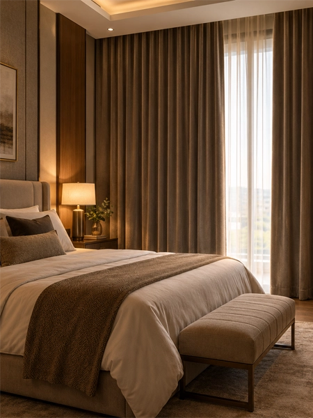

Bedroom curtains in Bangladesh
Bedroom curtains in Bangladesh | Curtain Canvas
A bedroom has one job above all others: helping you rest. Curtains play a bigger part in that than most people expect. They decide how much morning sun reaches your pillow, how private the room feels from the building next door, how much street noise carries in, and whether the space feels finished or half-dressed.
At Curtain Canvas, we design and make bedroom curtains in Bangladesh around the actual room: its window size, light direction, furniture, wall color, and the way you live in it. You get expert guidance, precise measurement, custom tailoring, and professional installation from one team.
Book a Free ConsultationWhy bedroom curtains deserve careful choosing
Curtains for a living room are mostly about looks. Curtains for a bedroom have to do more. Choosing well means balancing below facts, not just picking a color from a catalogue.
- Block or soften light. Early sun, streetlights, and neighboring windows all affect sleep.
- Protect privacy. This matters most in apartments where windows face other buildings across a narrow gap.
- Add comfort. Heavier, lined fabrics add a sense of softness and can take the edge off sound and glare.
- Set the mood. The curtain is often the largest textile in a bedroom, so it shapes the whole color story.
Bedroom curtain types we offer
Whether you want soft, sheer daylight or total blackout for deep sleep, our bedroom curtain collection has a style to match every mood, window, and budget.

Velvet and Heavy-Fall Curtains
Best for a rich, hotel-style look. Dense fabrics with a full, deep drape add warmth, texture, and presence and suit larger master bedrooms with taller windows.
Light-Filtering Curtains
Best for rooms that need privacy without full darkness, such as guest rooms and home-office bedrooms. They soften glare while keeping the room bright.
Custom-Designed Curtains
If your room has an unusual window, a bay, a full-wall glass section, or a balcony door, we plan the curtain from scratch. See our customised curtain solutions.Explore curtain types
Choosing the right fabric for a Bangladeshi bedroom
Bangladesh's heat, humidity, and strong seasonal sunlight should shape your fabric choice. Here is a simple guide:
| Your priority | What to look for |
|---|---|
| Full darkness for sleep | Blackout-lined or tightly woven heavy fabric |
| Cooler, lighter feel in summer | Breathable, lighter-weight fabrics with a soft fall |
| Privacy by day without losing light | Quality sheer or semi-sheer layer |
| A luxurious, hotel-style bedroom | Velvet or heavy-fall fabric, full-length curtains |
| Easy upkeep | Fabrics that handle regular care without losing their shape |
| Humid months | Fabrics that resist heaviness and hold their drape; good airflow around the window |
Matching curtains to your bedroom style
If your bedroom wall is a strong color, choose a curtain in a similar tone for a calm look or a neutral that lets the wall speak. Here are some tips:
Modern and minimal:
Plain, neutral tones, clean pleats, and a slim track for a quiet, uncluttered look.
Classic and luxurious:
Rich colors, full-length drape, and layered treatment with a sheer underneath.
Warm and cozy:
Earthy tones such as taupe, sand, olive, or rust that pair with wooden furniture.
Bright and airy:
Ivory, soft white or pale sage in light-filtering fabric.
Dark and restful:
Deep charcoal, navy, or cocoa shades paired with blackout lining.
Getting the details right
A beautiful fabric can still disappoint if the details are off. Our team plans every one of these with you:
- Curtain length: Floor-skimming or full-length curtains make the ceiling feel higher and the room more finished.
- Fullness: Enough fabric width for a generous, even fold rather than a flat, stretched look.
- Pleat style: Wave, pinch pleat, or eyelet, chosen for the look you want and how the curtain will move.
- Hardware: Rods or tracks matched to the weight of the fabric, so curtains glide smoothly and do not sag.
- Overlap and side gaps: Planned so that light does not leak around the edges, especially for blackout curtains.
How Curtain Canvas makes your bedroom curtains
From measuring your window to the final hang, every bedroom curtain at Curtain Canvas is custom-made to your exact size, fabric choice, and style, so it fits your room perfectly.
Consultation:
Tell us about your room, your sleep needs, and your style. See our curtain consultancy service.
Onsite visit and fabric presentation:
We bring catalogues and swatches and can arrange a trial hanging so you can see the fabric in your own light.
Precise measurement:
Every window and fitting area is measured for the right dimensions.
Custom tailoring:
Your curtains are stitched and finished to the approved design.
Professional installation:
We fit the rod or track and check alignment, movement, and curtain fall beforehand.
After-sales support:
Help with fitting and adjustments after installation.
Why choose Curtain Canvas for bedroom curtains in Bangladesh
Choose Curtain Canvas for bedroom curtains in Bangladesh, and you get premium fabrics, made-to-measure tailoring, and professional installation from a team that treats your bedroom like its own.
Make an Appointment- Interior design-focused approach: We choose curtains that work with your furniture, colors, and room proportions.
- Wide choice: 120+ fabric and style options to choose from.
- Made to measure: No ready-made compromises; every curtain is planned for your window.
- One team, start to finish: consultation, measurement, tailoring, installation, and support.
- Experience you can check: 5+ years of curtain expertise, 2,000+ windows styled, and a 4.9/5 client satisfaction rating. See our client reviews and completed projects.
Bedroom Curtains Across Bangladesh
We serve homes and apartments across Dhaka and other major cities. Explore our service areas: Dhaka and the wider Bangladesh service area.
FAQs about bedroom curtains
It depends on the room. For deep sleep and strong morning sun, blackout-lined curtains work best. For a bright, airy feel, sheers are a good fit. Most master bedrooms do well with a layered setup: a sheer layer for daytime and a heavier curtain for night.
Yes. We make blackout bedroom curtains in a range of fabrics and colors, and we plan the fullness and side overlap so that light leakage is kept to a minimum.
Yes. All our bedroom curtains are made to measure, based on your actual window and fitting dimensions, fabric choice, and design.
Soft neutrals and earthy tones such as ivory, taupe, sand, sage, and warm brown create a restful feel. Deeper shades such as navy or charcoal suit a darker, cosier bedroom. A consultant can match the color to your walls and furniture.
Choose blackout for darkness and privacy at night, and sheer for daytime softness and light. If you want both, layer them. Our guide to blackout vs sheer curtains explains the difference in detail.
Yes. Our team measures, installs the rod or track, and checks the finish before handover.